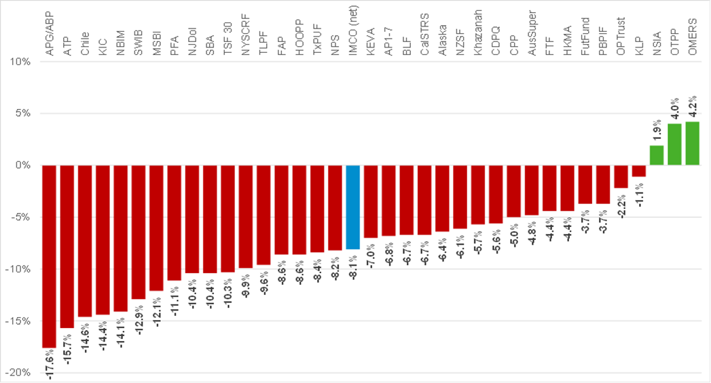

Taking the long view: Reflections of the current market environment
2022 - A choppy ride for investors
2022 was a challenging year for most investors, with historically weak results across many asset classes. The S&P 500 lost 18 per cent, U.S. corporate bonds lost 15 per cent, ten-year U.S. Treasuries lost 12 per cent, and the North American REIT index declined 28 per cent. Only a few asset classes performed well: Cash was up two per cent, the U.S. dollar rose seven per cent against the Canadian dollar, and commodities rose by 16 per cent. Private assets were somewhat insulated from declines in the public markets, as private valuations typically lag their public market equivalents.
The combination of large and divergent movements in asset classes resulted in a wide range of returns for institutional investors in 2022 (see table below). Funds with long-term strategic asset allocations that are heavily weighted to private assets, shorter duration bonds, and with little or no U.S. dollar hedging achieved stronger returns than funds holding more public assets, longer duration bonds, and more hedged U.S. dollar exposure.
2022 Returns: Global Institutional Investors
Source: IMCO Research Team
2023 - Staying the course in turbulent times
With interest rates rising more than 400 basis points over the past 12 months, and the move toward "quantitative tightening", or shrinking of balance sheets by central banks, we are now seeing ripple effects throughout the financial system. The $212 billion Silicon Valley Bank was the first sizeable bank failure since the 2008 global financial crisis and UBS had to take over the struggling Credit Suisse with the support of the Swiss government. Investors are now closely watching whether ongoing restrictive monetary policy will negatively impact economic growth levels in 2023 by decreasing demand.
Challenging environments like these can tempt some investors to try to temporarily change their asset mix to avoid the short-term market risk. Temporarily altering asset mix is exceedingly difficult to time right and the consequences of mistiming can materially impact long-term returns. As a result, we believe that our clients should hold firm on their long-term strategies, including during periods of volatility.
One of the most significant advantages that long-term investors can leverage is a longer investment time horizon. This longer-term perspective combined with proper liquidity management allows our clients to invest in asset classes, such as equities, infrastructure, real estate, and credit, which may be more volatile in the short term, but typically generate higher returns over the long run. For example, $100 invested in the S&P in 1928 would now be worth more than $624,000; while $100 invested in each of 10-year U.S. Treasuries and gold would be worth less than $9,000. There have been periods when equities and other growth-oriented assets have underperformed, but the long-term case for growth-oriented assets is strong.
Navigating the current market
Holding firm to long-term strategies and maintaining a growth orientation does not mean ignoring current market conditions. There are several strategies we are employing on behalf of our clients to help them navigate the current market. These include the following.
- We are working with our clients to carefully managing liquidity, in order to navigate what we believe will be more frequent, and longer, periods of market volatility than in the recent past. Central banks cannot be relied on to quickly address market downturns in an environment of potentially higher inflation.
- We are working with our clients to gradually re-orient their bond exposures to reflect a more balanced mix of inflation and nominal bonds to protect from what we believe will be more frequent periods of higher inflation than in the recent past. There are many global inflationary forces, such as the energy transition and slowing globalization.
- We are investing in the energy transition, which will create significant opportunities for investors with the right expertise and a pragmatic approach.
- We are closely monitoring the increased geopolitical and ESG risk related to investing in China and we are avoiding "overweights" to China and limiting investments there to liquid public investments.
- We are ensuring that new private market transactions are done at valuations that are in line with their public market equivalents, even though most private market book values still lag their public market equivalents.
- We are being careful about portfolio rebalancing decisions that are driven by the denominator effect of reduced assets under management when public markets have repriced more than private markets. We don't believe in selling private markets' assets or slowing new investments to reduce allocations driven by lagged valuations.
- Finally, in partnership with our clients, we continue to increase their allocations to private credit, where deal terms have significantly improved, and deal volumes have not fallen off in the same way as other private asset classes (like private equity, real estate and infrastructure where owners have more flexibility than borrowers to postpone transactions).
Summary view
2022 was a challenging year for many investors and 2023 has already had its fair share of market volatility. However, we continue to believe that for long-term investors the right course of action is to stick to their long-term plans, maintain a growth asset orientation, avoid the impulse to step out of the markets until things feel more settled, and take steps to optimize portfolios within the current market context.
Bert Clark
President and CEO